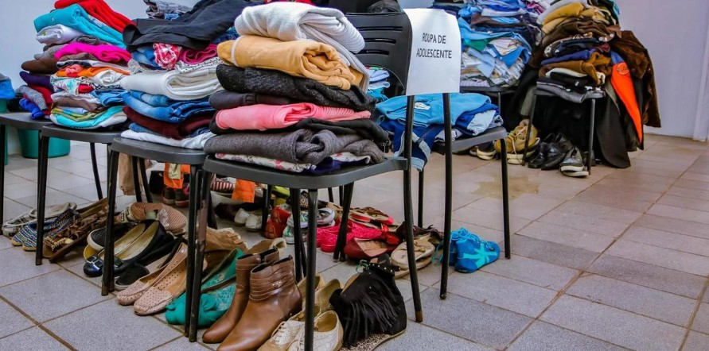

Doar para essa causa é uma atitude solidária e essencial para ajudar aqueles que mais precisam. A campanha do agasalho tem como objetivo arrecadar roupas, cobertores e itens de inverno em bom estado para distribuir às pessoas em situação de vulnerabilidade.
Quanto mais você se habitua a doar objetos e roupas, mais você percebe que coisas materiais são menos importantes do que pensamos. Além disso, o desapego material cria em nós um senso de responsabilidade e empatia com os outros.
separe as peças que você não usa há mais de 6 meses; .
retire as roupas que não servem mais por perda ou ganho de peso;
desapegue de peças que estejam com partes da costura danificadas;
repasse as roupas que você sempre veste, mas não se sente bem;
doe as roupas que estão guardadas apenas por apego emocional;
retire as roupas que você ganhou de presente e não usa no dia a dia;
separe também as peças que não combinam com seu estilo e rotina.
No Brasil, Campanha do Agasalho é um tipo de campanha filantrópica, organizada geralmente por associações da sociedade civil, ou por vezes, por órgãos governamentais, no sentido de arrecadar agasalhos em geral, tais como casacos e cobertores, em empresas estatais, estações do metrô, aplicativos para smartphone e comunidade em geral, para depois doar estas peças a entidades assistenciais e pessoas pobres e desvalidas.
A campanha do agasalho tem como objetivo arrecadar roupas, cobertores e itens de inverno em bom estado para distribuir às pessoas em situação de vulnerabilidade. Essas doações podem fazer a diferença entre passar frio e ter um pouco de conforto durante os dias mais gelados.
Existem diversas formas de participar da campanha do agasalho. Você pode doar roupas em bom estado, cobertores, calçados e outros itens de inverno diretamente nos pontos de coleta localizados no CRAS, Cadastro Único, Projeto Semente da Esperança no Comendador Carlos Santos, Gabinete da Prefeita e tambem pela chave Pix doacoesfussp@sp.gov.br.